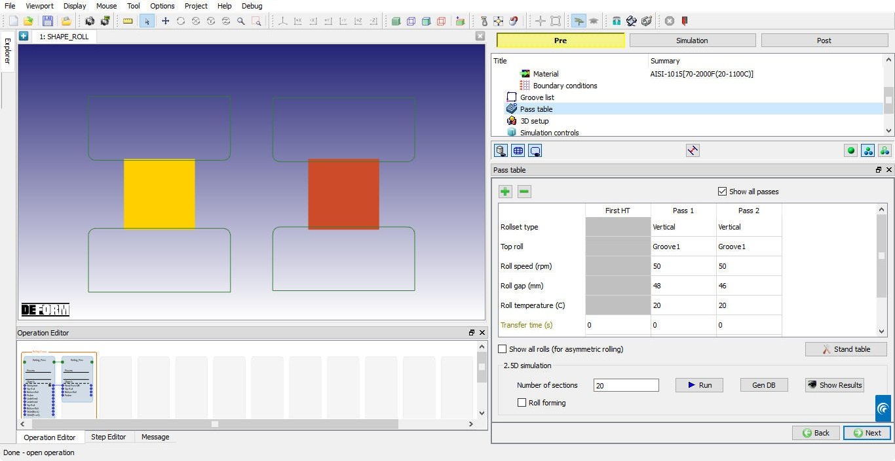
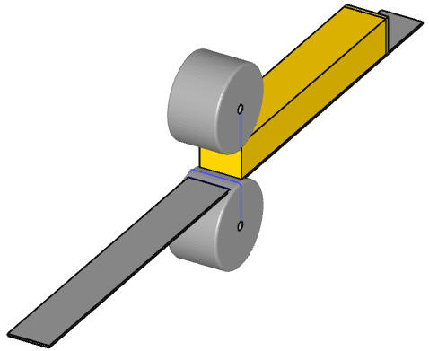
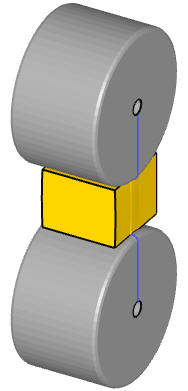

Shape Rolling Operation template setup is designed for guiding user to setup different types of Rolling processes. A typical Shape Rolling setup consists of Workpiece, Rolls (Top roll and Bottom roll), Pusher Object and Table (see Fig. 43.2.) Using this template user model Shape rolling operation as,
Lagrangian rolling type
Steady-State ALE type
Shape rolling process can be set up as combination of passes and stands along with heat transfer operations in between passes. User is provided with Pass table and Stand table to define the process data in a simple tabular format as shown in Fig. 43.1.

Defining multi passes in the pass table
Shape rolling process can be set up using 2D cross-sections of workpiece and roll, this 2D setup can be used to simulate 2.5D simulation process. Typical cross- sections of rolls are provided as primitives to define roll grooves. The 2D setup can be converted into 3D using the 3D conversion options available in template. User can make necessary modifications for 3D setup at pass level and define the data like pusher object, mesh settings, remesh criteria, strain initialization, boolean between passes,..etc. Typical rolling setups for Lagrangian and ALE rolling are as mentioned below,


Steady-State ALE Rolling type setup
Related Topics: